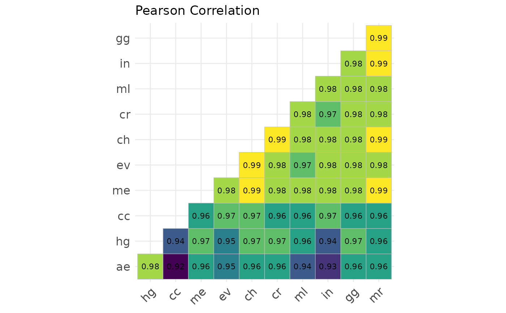

Compute and Plot Correlation Matrix for a Set of General Circulation Models
Source:R/cor_gcms.R
cor_gcms.RdThis function computes and visualizes the correlation matrix for a set of General Circulation Models (GCMs) based on their variables.
Usage
cor_gcms(
s,
var_names = c("bio_1", "bio_12"),
study_area = NULL,
scale = TRUE,
method = "pearson"
)Arguments
- s
A list of stacks of General Circulation Models (GCMs).
- var_names
Character. A vector with names of the variables to compare, or 'all' to include all variables.
- study_area
An Extent object, or any object from which an Extent object can be extracted. Defines the study area for cropping and masking the rasters.
- scale
Logical. Whether to apply centering and scaling to the data. Default is
TRUE.- method
Character. The correlation method to use. Default is "pearson". Possible values are: "pearson", "kendall", or "spearman".
Value
A list containing two items: cor_matrix (the calculated correlations between GCMs) and cor_plot (a plot visualizing the correlation matrix).
Examples
var_names <- c("bio_1", "bio_12")
s <- import_gcms(system.file("extdata", package = "chooseGCM"), var_names = var_names)
study_area <- terra::ext(c(-80, -30, -50, 10)) |> terra::vect(crs="epsg:4326")
cor_gcms(s, var_names, study_area, method = "pearson")
#> Scale for fill is already present.
#> Adding another scale for fill, which will replace the existing scale.
#> $cor_matrix
#> ae cc ch cr ev gg hg
#> ae 1.0000000 0.9219747 0.9571112 0.9613585 0.9492778 0.9649294 0.9833486
#> cc 0.9219747 1.0000000 0.9695970 0.9644769 0.9719578 0.9560660 0.9366215
#> ch 0.9571112 0.9695970 1.0000000 0.9910983 0.9867315 0.9825975 0.9693717
#> cr 0.9613585 0.9644769 0.9910983 1.0000000 0.9823423 0.9826507 0.9722321
#> ev 0.9492778 0.9719578 0.9867315 0.9823423 1.0000000 0.9773964 0.9546606
#> gg 0.9649294 0.9560660 0.9825975 0.9826507 0.9773964 1.0000000 0.9652498
#> hg 0.9833486 0.9366215 0.9693717 0.9722321 0.9546606 0.9652498 1.0000000
#> in 0.9314944 0.9681631 0.9849882 0.9734534 0.9807411 0.9793463 0.9425552
#> me 0.9556262 0.9642517 0.9886974 0.9832545 0.9796424 0.9783986 0.9652108
#> ml 0.9449743 0.9614685 0.9805508 0.9795914 0.9738266 0.9838261 0.9595722
#> mr 0.9588276 0.9588638 0.9901494 0.9814043 0.9816382 0.9860674 0.9646367
#> in me ml mr
#> ae 0.9314944 0.9556262 0.9449743 0.9588276
#> cc 0.9681631 0.9642517 0.9614685 0.9588638
#> ch 0.9849882 0.9886974 0.9805508 0.9901494
#> cr 0.9734534 0.9832545 0.9795914 0.9814043
#> ev 0.9807411 0.9796424 0.9738266 0.9816382
#> gg 0.9793463 0.9783986 0.9838261 0.9860674
#> hg 0.9425552 0.9652108 0.9595722 0.9646367
#> in 1.0000000 0.9822258 0.9778581 0.9859656
#> me 0.9822258 1.0000000 0.9806899 0.9883747
#> ml 0.9778581 0.9806899 1.0000000 0.9846096
#> mr 0.9859656 0.9883747 0.9846096 1.0000000
#>
#> $cor_plot

#>